Por onde começar
- Abre o Guia de Confeção e Ajuste: explica-te como imprimir os moldes e como tirar as medidas.
- Escolhe um molde da coleção e descarrega-o em A4 por partes (para imprimir em casa) ou em Plotter (uma folha em tamanho real).
- Imprime a 100 % («Tamanho real») e mede o quadrado de controlo: tem de dar 10 × 10 cm.
- Corta a tua primeira toile de prova antes de usar o tecido definitivo.
Guias de confeção
A orientação de costura, modelagem, ajuste e acabamentos, e os bónus I, II e III.
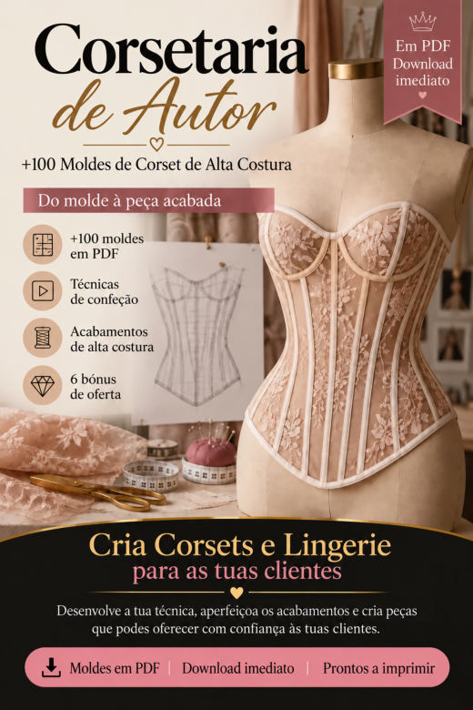
Guia de Confeção e AjusteImprimir e montar os moldes, tirar medidas, adaptar o molde a outras medidas, a toile, costura de precisão, acabamentos e apresentação de peças por medida.
Abrir PDF- Guia para Trabalhar o Tule Transparente
Estabilizar, cortar e coser o tule com menos estiramentos e mais controlo.
Abrir PDF - Lista de Verificação de Acabamentos
Os detalhes que costumam passar despercebidos, para rever antes de fotografar ou entregar.
Abrir PDF 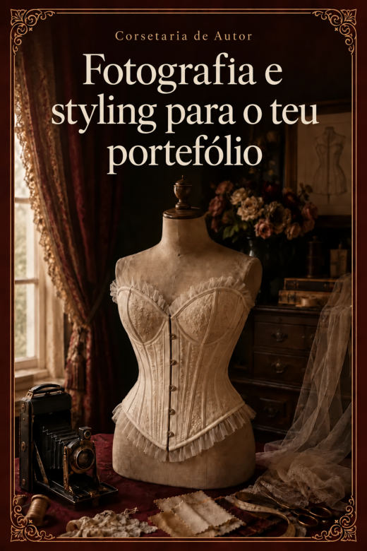
Fotografia e Styling para o Teu PortefólioLuz, fundo, as 8 fotografias de cada peça, styling e como montar o teu portefólio com o telemóvel.
Abrir PDF
Não há moldes com esse nome. Experimenta outra palavra.
Corsetaria de Autor · 110 moldes de corset
110 moldes em PDF · cada um em A4 por partes e em plotter em tamanho real.
Cinto corset 8
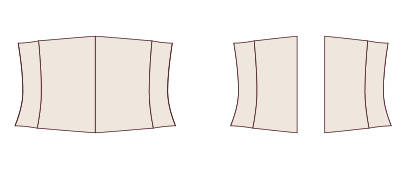
CORSET 001Cinto Corset · 4 Painéis · Bordo Reto CORSET 002Cinto Corset · 4 Painéis · Bordo em Bico
CORSET 002Cinto Corset · 4 Painéis · Bordo em Bico CORSET 003Cinto Corset · 4 Painéis · Bordo Curvo
CORSET 003Cinto Corset · 4 Painéis · Bordo Curvo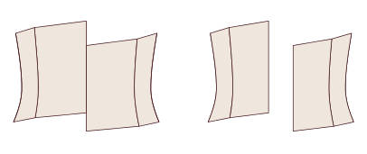
CORSET 004Cinto Corset · 4 Painéis · Bordo Assimétrico CORSET 005Cinto Corset · 5 Painéis · Bordo Reto
CORSET 005Cinto Corset · 5 Painéis · Bordo Reto CORSET 006Cinto Corset · 5 Painéis · Bordo em Bico
CORSET 006Cinto Corset · 5 Painéis · Bordo em Bico CORSET 007Cinto Corset · 5 Painéis · Bordo Curvo
CORSET 007Cinto Corset · 5 Painéis · Bordo Curvo CORSET 008Cinto Corset · 5 Painéis · Bordo Assimétrico
CORSET 008Cinto Corset · 5 Painéis · Bordo Assimétrico
Corset curto de cintura 12
 CORSET 009Corset Curto de Cintura · 5 Painéis · Bordo Reto
CORSET 009Corset Curto de Cintura · 5 Painéis · Bordo Reto CORSET 010Corset Curto de Cintura · 5 Painéis · Bordo em Bico
CORSET 010Corset Curto de Cintura · 5 Painéis · Bordo em Bico CORSET 011Corset Curto de Cintura · 5 Painéis · Bordo Curvo
CORSET 011Corset Curto de Cintura · 5 Painéis · Bordo Curvo CORSET 012Corset Curto de Cintura · 5 Painéis · Bordo com Anca Longa
CORSET 012Corset Curto de Cintura · 5 Painéis · Bordo com Anca Longa CORSET 013Corset Curto de Cintura · 6 Painéis · Bordo Reto
CORSET 013Corset Curto de Cintura · 6 Painéis · Bordo Reto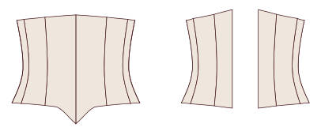
CORSET 014Corset Curto de Cintura · 6 Painéis · Bordo em Bico CORSET 015Corset Curto de Cintura · 6 Painéis · Bordo Curvo
CORSET 015Corset Curto de Cintura · 6 Painéis · Bordo Curvo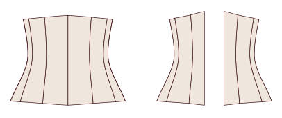
CORSET 016Corset Curto de Cintura · 6 Painéis · Bordo com Anca Longa CORSET 017Corset Curto de Cintura · 7 Painéis · Bordo Reto
CORSET 017Corset Curto de Cintura · 7 Painéis · Bordo Reto CORSET 018Corset Curto de Cintura · 7 Painéis · Bordo em Bico
CORSET 018Corset Curto de Cintura · 7 Painéis · Bordo em Bico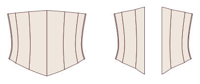
CORSET 019Corset Curto de Cintura · 7 Painéis · Bordo Curvo CORSET 020Corset Curto de Cintura · 7 Painéis · Bordo com Anca Longa
CORSET 020Corset Curto de Cintura · 7 Painéis · Bordo com Anca Longa
Sob o busto clássico 16
 CORSET 021Sob o Busto Clássico · 5 Painéis · Bordo Reto
CORSET 021Sob o Busto Clássico · 5 Painéis · Bordo Reto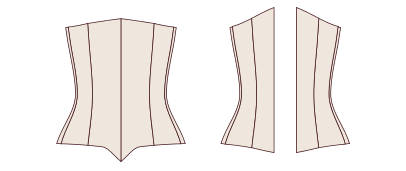
CORSET 022Sob o Busto Clássico · 5 Painéis · Bordo em Bico CORSET 023Sob o Busto Clássico · 5 Painéis · Bordo Curvo sobre a Anca
CORSET 023Sob o Busto Clássico · 5 Painéis · Bordo Curvo sobre a Anca CORSET 024Sob o Busto Clássico · 5 Painéis · Bordo em Bico Duplo
CORSET 024Sob o Busto Clássico · 5 Painéis · Bordo em Bico Duplo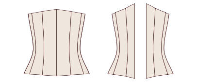
CORSET 025Sob o Busto Clássico · 6 Painéis · Bordo Reto CORSET 026Sob o Busto Clássico · 6 Painéis · Bordo em Bico
CORSET 026Sob o Busto Clássico · 6 Painéis · Bordo em Bico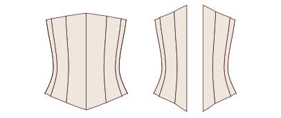
CORSET 027Sob o Busto Clássico · 6 Painéis · Bordo Curvo sobre a Anca CORSET 028Sob o Busto Clássico · 6 Painéis · Bordo em Bico Duplo
CORSET 028Sob o Busto Clássico · 6 Painéis · Bordo em Bico Duplo CORSET 029Sob o Busto Clássico · 7 Painéis · Bordo Reto
CORSET 029Sob o Busto Clássico · 7 Painéis · Bordo Reto CORSET 030Sob o Busto Clássico · 7 Painéis · Bordo em Bico
CORSET 030Sob o Busto Clássico · 7 Painéis · Bordo em Bico CORSET 031Sob o Busto Clássico · 7 Painéis · Bordo Curvo sobre a Anca
CORSET 031Sob o Busto Clássico · 7 Painéis · Bordo Curvo sobre a Anca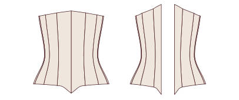
CORSET 032Sob o Busto Clássico · 7 Painéis · Bordo em Bico Duplo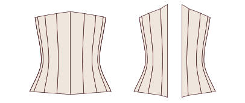
CORSET 033Sob o Busto Clássico · 8 Painéis · Bordo Reto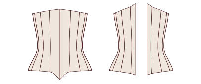
CORSET 034Sob o Busto Clássico · 8 Painéis · Bordo em Bico CORSET 035Sob o Busto Clássico · 8 Painéis · Bordo Curvo sobre a Anca
CORSET 035Sob o Busto Clássico · 8 Painéis · Bordo Curvo sobre a Anca CORSET 036Sob o Busto Clássico · 8 Painéis · Bordo em Bico Duplo
CORSET 036Sob o Busto Clássico · 8 Painéis · Bordo em Bico Duplo
Sob o busto vitoriano 10
 CORSET 037Sob o Busto Vitoriano · 6 Painéis · Redução de 6 cm
CORSET 037Sob o Busto Vitoriano · 6 Painéis · Redução de 6 cm CORSET 038Sob o Busto Vitoriano · 6 Painéis · Redução de 8 cm
CORSET 038Sob o Busto Vitoriano · 6 Painéis · Redução de 8 cm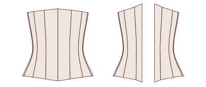
CORSET 039Sob o Busto Vitoriano · 7 Painéis · Redução de 6 cm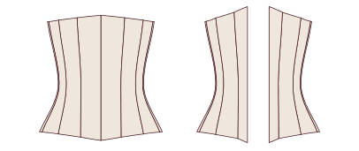
CORSET 040Sob o Busto Vitoriano · 7 Painéis · Redução de 8 cm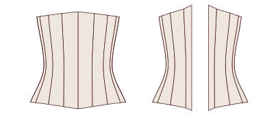
CORSET 041Sob o Busto Vitoriano · 8 Painéis · Redução de 6 cm CORSET 042Sob o Busto Vitoriano · 8 Painéis · Redução de 8 cm
CORSET 042Sob o Busto Vitoriano · 8 Painéis · Redução de 8 cm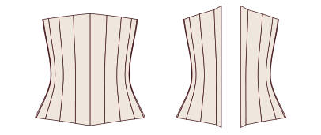
CORSET 043Sob o Busto Vitoriano · 9 Painéis · Redução de 6 cm CORSET 044Sob o Busto Vitoriano · 9 Painéis · Redução de 8 cm
CORSET 044Sob o Busto Vitoriano · 9 Painéis · Redução de 8 cm CORSET 045Sob o Busto Vitoriano · 10 Painéis · Redução de 6 cm
CORSET 045Sob o Busto Vitoriano · 10 Painéis · Redução de 6 cm CORSET 046Sob o Busto Vitoriano · 10 Painéis · Redução de 8 cm
CORSET 046Sob o Busto Vitoriano · 10 Painéis · Redução de 8 cm
Sob o busto eduardiano 8
 CORSET 047Sob o Busto Eduardiano de Frente Reta · 6 Painéis · Bordo Reto
CORSET 047Sob o Busto Eduardiano de Frente Reta · 6 Painéis · Bordo Reto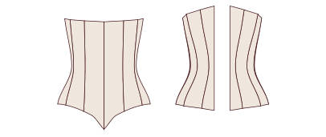
CORSET 048Sob o Busto Eduardiano de Frente Reta · 6 Painéis · Bordo em Bico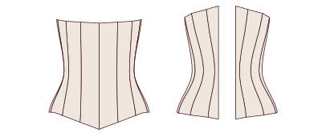
CORSET 049Sob o Busto Eduardiano de Frente Reta · 7 Painéis · Bordo Reto CORSET 050Sob o Busto Eduardiano de Frente Reta · 7 Painéis · Bordo em Bico
CORSET 050Sob o Busto Eduardiano de Frente Reta · 7 Painéis · Bordo em Bico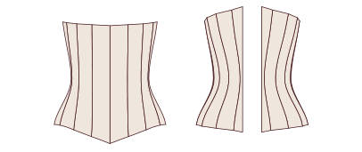
CORSET 051Sob o Busto Eduardiano de Frente Reta · 8 Painéis · Bordo Reto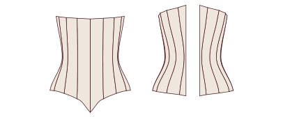
CORSET 052Sob o Busto Eduardiano de Frente Reta · 8 Painéis · Bordo em Bico CORSET 053Sob o Busto Eduardiano de Frente Reta · 9 Painéis · Bordo Reto
CORSET 053Sob o Busto Eduardiano de Frente Reta · 9 Painéis · Bordo Reto CORSET 054Sob o Busto Eduardiano de Frente Reta · 9 Painéis · Bordo em Bico
CORSET 054Sob o Busto Eduardiano de Frente Reta · 9 Painéis · Bordo em Bico
Sob o busto comprido 8
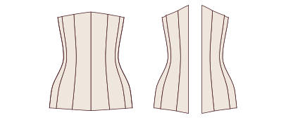
CORSET 055Sob o Busto Comprido até à Anca · 6 Painéis · Busk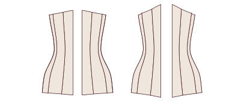
CORSET 056Sob o Busto Comprido até à Anca · 6 Painéis · Atacador à Frente CORSET 057Sob o Busto Comprido até à Anca · 7 Painéis · Busk
CORSET 057Sob o Busto Comprido até à Anca · 7 Painéis · Busk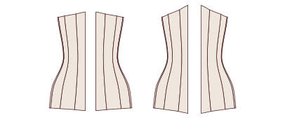
CORSET 058Sob o Busto Comprido até à Anca · 7 Painéis · Atacador à Frente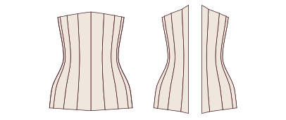
CORSET 059Sob o Busto Comprido até à Anca · 8 Painéis · Busk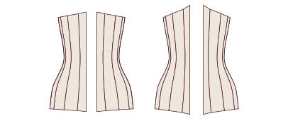
CORSET 060Sob o Busto Comprido até à Anca · 8 Painéis · Atacador à Frente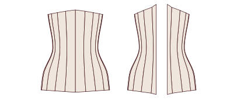
CORSET 061Sob o Busto Comprido até à Anca · 9 Painéis · Busk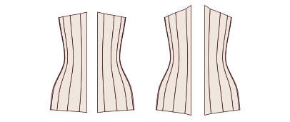
CORSET 062Sob o Busto Comprido até à Anca · 9 Painéis · Atacador à Frente
Sobre o busto · decote reto 10
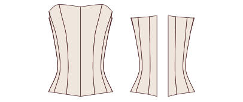
CORSET 063Sobre o Busto com Decote Reto · 6 Painéis · Busk CORSET 064Sobre o Busto com Decote Reto · 6 Painéis · Atacador à Frente
CORSET 064Sobre o Busto com Decote Reto · 6 Painéis · Atacador à Frente CORSET 065Sobre o Busto com Decote Reto · 7 Painéis · Busk
CORSET 065Sobre o Busto com Decote Reto · 7 Painéis · Busk CORSET 066Sobre o Busto com Decote Reto · 7 Painéis · Atacador à Frente
CORSET 066Sobre o Busto com Decote Reto · 7 Painéis · Atacador à Frente CORSET 067Sobre o Busto com Decote Reto · 8 Painéis · Busk
CORSET 067Sobre o Busto com Decote Reto · 8 Painéis · Busk CORSET 068Sobre o Busto com Decote Reto · 8 Painéis · Atacador à Frente
CORSET 068Sobre o Busto com Decote Reto · 8 Painéis · Atacador à Frente CORSET 069Sobre o Busto com Decote Reto · 9 Painéis · Busk
CORSET 069Sobre o Busto com Decote Reto · 9 Painéis · Busk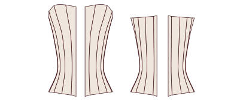
CORSET 070Sobre o Busto com Decote Reto · 9 Painéis · Atacador à Frente CORSET 071Sobre o Busto com Decote Reto · 10 Painéis · Busk
CORSET 071Sobre o Busto com Decote Reto · 10 Painéis · Busk CORSET 072Sobre o Busto com Decote Reto · 10 Painéis · Atacador à Frente
CORSET 072Sobre o Busto com Decote Reto · 10 Painéis · Atacador à Frente
Sobre o busto · decote coração 10
 CORSET 073Sobre o Busto com Decote Coração · 6 Painéis · Bordo Reto
CORSET 073Sobre o Busto com Decote Coração · 6 Painéis · Bordo Reto CORSET 074Sobre o Busto com Decote Coração · 6 Painéis · Bordo em Bico
CORSET 074Sobre o Busto com Decote Coração · 6 Painéis · Bordo em Bico CORSET 075Sobre o Busto com Decote Coração · 7 Painéis · Bordo Reto
CORSET 075Sobre o Busto com Decote Coração · 7 Painéis · Bordo Reto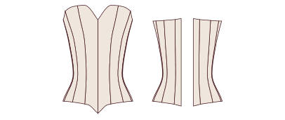
CORSET 076Sobre o Busto com Decote Coração · 7 Painéis · Bordo em Bico CORSET 077Sobre o Busto com Decote Coração · 8 Painéis · Bordo Reto
CORSET 077Sobre o Busto com Decote Coração · 8 Painéis · Bordo Reto CORSET 078Sobre o Busto com Decote Coração · 8 Painéis · Bordo em Bico
CORSET 078Sobre o Busto com Decote Coração · 8 Painéis · Bordo em Bico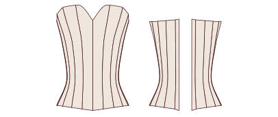
CORSET 079Sobre o Busto com Decote Coração · 9 Painéis · Bordo Reto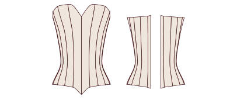
CORSET 080Sobre o Busto com Decote Coração · 9 Painéis · Bordo em Bico CORSET 081Sobre o Busto com Decote Coração · 10 Painéis · Bordo Reto
CORSET 081Sobre o Busto com Decote Coração · 10 Painéis · Bordo Reto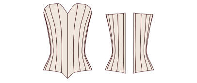
CORSET 082Sobre o Busto com Decote Coração · 10 Painéis · Bordo em Bico
Sobre o busto · decote em V 8
 CORSET 083Sobre o Busto com Decote em V Suave · 6 Painéis
CORSET 083Sobre o Busto com Decote em V Suave · 6 Painéis CORSET 084Sobre o Busto com Decote em V Profundo · 6 Painéis
CORSET 084Sobre o Busto com Decote em V Profundo · 6 Painéis CORSET 085Sobre o Busto com Decote em V Suave · 7 Painéis
CORSET 085Sobre o Busto com Decote em V Suave · 7 Painéis CORSET 086Sobre o Busto com Decote em V Profundo · 7 Painéis
CORSET 086Sobre o Busto com Decote em V Profundo · 7 Painéis CORSET 087Sobre o Busto com Decote em V Suave · 8 Painéis
CORSET 087Sobre o Busto com Decote em V Suave · 8 Painéis CORSET 088Sobre o Busto com Decote em V Profundo · 8 Painéis
CORSET 088Sobre o Busto com Decote em V Profundo · 8 Painéis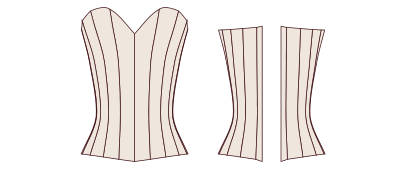
CORSET 089Sobre o Busto com Decote em V Suave · 9 Painéis CORSET 090Sobre o Busto com Decote em V Profundo · 9 Painéis
CORSET 090Sobre o Busto com Decote em V Profundo · 9 Painéis
Sobre o busto · balconete 8
 CORSET 091Sobre o Busto Balconete · 6 Painéis · Bordo Reto
CORSET 091Sobre o Busto Balconete · 6 Painéis · Bordo Reto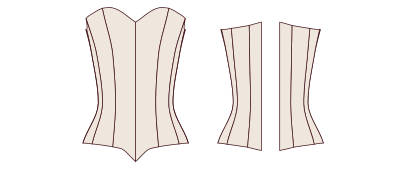
CORSET 092Sobre o Busto Balconete · 6 Painéis · Bordo em Bico CORSET 093Sobre o Busto Balconete · 7 Painéis · Bordo Reto
CORSET 093Sobre o Busto Balconete · 7 Painéis · Bordo Reto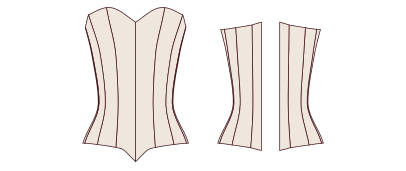
CORSET 094Sobre o Busto Balconete · 7 Painéis · Bordo em Bico CORSET 095Sobre o Busto Balconete · 8 Painéis · Bordo Reto
CORSET 095Sobre o Busto Balconete · 8 Painéis · Bordo Reto- CORSET 096Sobre o Busto Balconete · 8 Painéis · Bordo em Bico
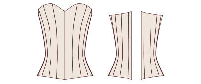
CORSET 097Sobre o Busto Balconete · 9 Painéis · Bordo Reto CORSET 098Sobre o Busto Balconete · 9 Painéis · Bordo em Bico
CORSET 098Sobre o Busto Balconete · 9 Painéis · Bordo em Bico
Corselete com alças 6
 CORSET 099Corselete com Alças Finas · 6 Painéis
CORSET 099Corselete com Alças Finas · 6 Painéis CORSET 100Corselete com Alças Largas · 6 Painéis
CORSET 100Corselete com Alças Largas · 6 Painéis CORSET 101Corselete com Alças Finas · 7 Painéis
CORSET 101Corselete com Alças Finas · 7 Painéis CORSET 102Corselete com Alças Largas · 7 Painéis
CORSET 102Corselete com Alças Largas · 7 Painéis CORSET 103Corselete com Alças Finas · 8 Painéis
CORSET 103Corselete com Alças Finas · 8 Painéis CORSET 104Corselete com Alças Largas · 8 Painéis
CORSET 104Corselete com Alças Largas · 8 Painéis
Atacador à frente e atrás 6
 CORSET 105Sob o Busto com Atacador à Frente e Atrás · 6 Painéis
CORSET 105Sob o Busto com Atacador à Frente e Atrás · 6 Painéis CORSET 106Sobre o Busto com Atacador à Frente e Atrás · 6 Painéis
CORSET 106Sobre o Busto com Atacador à Frente e Atrás · 6 Painéis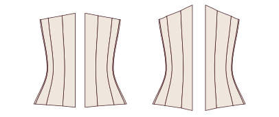
CORSET 107Sob o Busto com Atacador à Frente e Atrás · 7 Painéis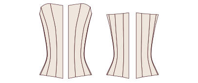
CORSET 108Sobre o Busto com Atacador à Frente e Atrás · 7 Painéis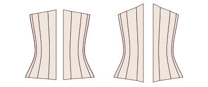
CORSET 109Sob o Busto com Atacador à Frente e Atrás · 8 Painéis CORSET 110Sobre o Busto com Atacador à Frente e Atrás · 8 Painéis
CORSET 110Sobre o Busto com Atacador à Frente e Atrás · 8 Painéis
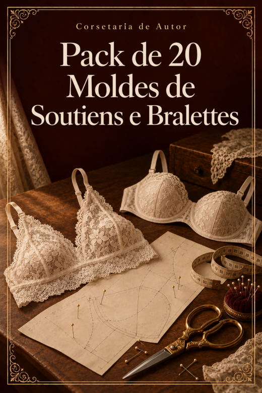
Bónus IV · Pack de 20 Moldes de Soutiens e Bralettes
20 moldes em PDF · cada um em A4 por partes e em plotter em tamanho real.
Triângulo 6
 SOUTIEN 001Bralette Triângulo Clássico
SOUTIEN 001Bralette Triângulo Clássico SOUTIEN 002Bralette Triângulo com Banda Larga
SOUTIEN 002Bralette Triângulo com Banda Larga SOUTIEN 003Bralette Triângulo com Costas Cruzadas
SOUTIEN 003Bralette Triângulo com Costas Cruzadas SOUTIEN 004Bralette Triângulo com Alças Duplas
SOUTIEN 004Bralette Triângulo com Alças Duplas SOUTIEN 005Bralette Triângulo de Renda com Bordo Festonado
SOUTIEN 005Bralette Triângulo de Renda com Bordo Festonado SOUTIEN 006Bralette Cortina com Laço
SOUTIEN 006Bralette Cortina com Laço
Halter 2
 SOUTIEN 007Bralette Halter Atado ao Pescoço
SOUTIEN 007Bralette Halter Atado ao Pescoço SOUTIEN 008Bralette Halter com Banda
SOUTIEN 008Bralette Halter com Banda
Decote em V e cruzados 2
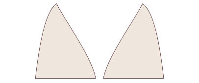
SOUTIEN 009Bralette com Decote em V Profundo SOUTIEN 010Bralette Cruzado à Frente
SOUTIEN 010Bralette Cruzado à Frente
Longline 2
 SOUTIEN 011Bralette Longline Reto
SOUTIEN 011Bralette Longline Reto SOUTIEN 012Bralette Longline em V
SOUTIEN 012Bralette Longline em V
Bandeau 2
 SOUTIEN 013Bandeau Liso
SOUTIEN 013Bandeau Liso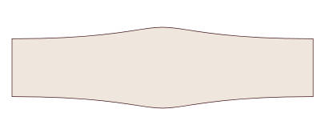
SOUTIEN 014Bandeau com Franzido Central
Com copa construída 4
 SOUTIEN 015Soutien Balconete sem Aro (Copa de 3 Peças)
SOUTIEN 015Soutien Balconete sem Aro (Copa de 3 Peças)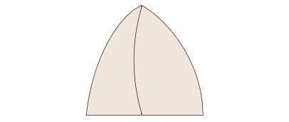
SOUTIEN 016Soutien de Copa com Costura Vertical sem Aro SOUTIEN 017Soutien de Copa Inteira sem Aro
SOUTIEN 017Soutien de Copa Inteira sem Aro SOUTIEN 018Soutien de Renda com Copa em 2 Peças
SOUTIEN 018Soutien de Renda com Copa em 2 Peças
Desportivos 2
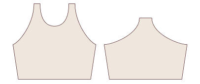
SOUTIEN 019Soutien Desportivo com Costas de Nadadora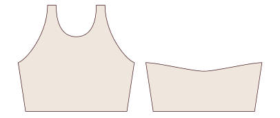
SOUTIEN 020Soutien Desportivo com Costas Cruzadas
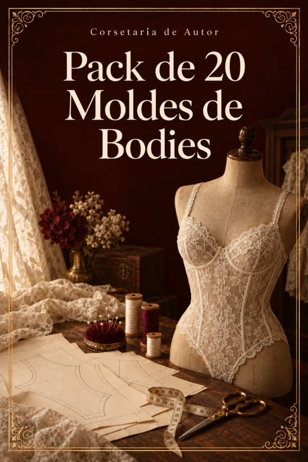
Bónus V · Pack de 20 Moldes de Bodies
20 moldes em PDF · cada um em A4 por partes e em plotter em tamanho real.
Bodies 20
 BODY 001Body com Decote Redondo · Costas Fechadas
BODY 001Body com Decote Redondo · Costas Fechadas BODY 002Body com Decote Redondo · Costas Cavadas
BODY 002Body com Decote Redondo · Costas Cavadas BODY 003Body com Decote Redondo · Costas Cruzadas
BODY 003Body com Decote Redondo · Costas Cruzadas BODY 004Body com Decote Redondo · Costas Abertas em Gota
BODY 004Body com Decote Redondo · Costas Abertas em Gota BODY 005Body com Decote em V · Costas Fechadas
BODY 005Body com Decote em V · Costas Fechadas BODY 006Body com Decote em V · Costas Cavadas
BODY 006Body com Decote em V · Costas Cavadas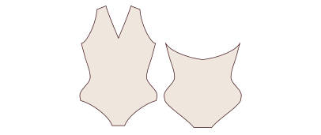
BODY 007Body com Decote em V · Costas Cruzadas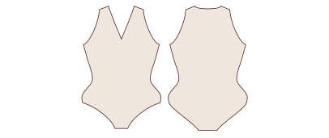
BODY 008Body com Decote em V · Costas Abertas em Gota BODY 009Body com Decote Quadrado · Costas Fechadas
BODY 009Body com Decote Quadrado · Costas Fechadas BODY 010Body com Decote Quadrado · Costas Cavadas
BODY 010Body com Decote Quadrado · Costas Cavadas- BODY 011Body com Decote Quadrado · Costas Cruzadas
- BODY 012Body com Decote Quadrado · Costas Abertas em Gota
 BODY 013Body com Decote Coração · Costas Fechadas
BODY 013Body com Decote Coração · Costas Fechadas- BODY 014Body com Decote Coração · Costas Cavadas
- BODY 015Body com Decote Coração · Costas Cruzadas
- BODY 016Body com Decote Coração · Costas Abertas em Gota
 BODY 017Body com Decote Halter · Costas Fechadas
BODY 017Body com Decote Halter · Costas Fechadas BODY 018Body com Decote Halter · Costas Cavadas
BODY 018Body com Decote Halter · Costas Cavadas BODY 019Body com Decote Halter · Costas Cruzadas
BODY 019Body com Decote Halter · Costas Cruzadas BODY 020Body com Decote Halter · Costas Abertas em Gota
BODY 020Body com Decote Halter · Costas Abertas em Gota
Bónus VI · Pack de 20 Moldes de Cuecas: Fio Dental, Tangas, Brasileiras e Culotte
20 moldes em PDF · cada um em A4 por partes e em plotter em tamanho real.
Fio dental 5
 CUECA 001Fio Dental Clássico
CUECA 001Fio Dental Clássico- CUECA 002Fio Dental de Cintura Subida
 CUECA 003Fio Dental com Tiras Laterais
CUECA 003Fio Dental com Tiras Laterais CUECA 004Fio Dental de Renda com Frente Dupla
CUECA 004Fio Dental de Renda com Frente Dupla CUECA 005Fio Dental Brasileiro em V
CUECA 005Fio Dental Brasileiro em V
Tangas 5
- CUECA 006Tanga Clássica de Cintura Descida
 CUECA 007Tanga de Cintura Média
CUECA 007Tanga de Cintura Média CUECA 008Tanga com Laterais Largas
CUECA 008Tanga com Laterais Largas CUECA 009Tanga Cavada
CUECA 009Tanga Cavada CUECA 010Tanga com Tiras Duplas
CUECA 010Tanga com Tiras Duplas
Brasileiras 5
 CUECA 011Cueca Brasileira Clássica
CUECA 011Cueca Brasileira Clássica CUECA 012Cueca Brasileira de Cintura Subida
CUECA 012Cueca Brasileira de Cintura Subida CUECA 013Cueca Brasileira de Perna Alta
CUECA 013Cueca Brasileira de Perna Alta- CUECA 014Cueca Brasileira com Laterais de Renda
 CUECA 015Cueca Brasileira Retro de Cintura Alta
CUECA 015Cueca Brasileira Retro de Cintura Alta
Culotte 5
 CUECA 016Culotte Clássico
CUECA 016Culotte Clássico CUECA 017Culotte de Cintura Subida
CUECA 017Culotte de Cintura Subida CUECA 018Culotte de Perna Reta
CUECA 018Culotte de Perna Reta CUECA 019Culotte de Renda com Bordo Festonado
CUECA 019Culotte de Renda com Bordo Festonado CUECA 020Culotte Calção
CUECA 020Culotte Calção
Próximo passo
Guarda esta página nos favoritos: é o teu acesso vitalício à coleção. Escolhe o teu primeiro molde, imprime-o e começa pela toile.